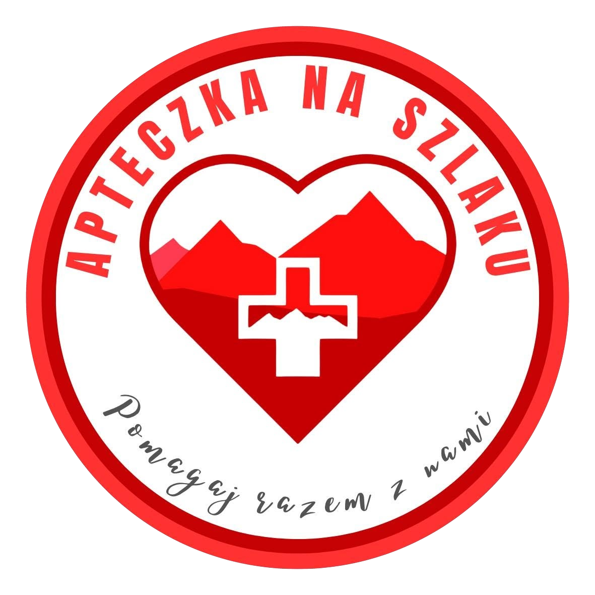

Hyc! Wszystko czego
potrzebujesz na szlaku
Zeskanuj i pobierz
O aplikacji
Złapała Cię ulewa lub szukasz miejsca na przerwę?
Jednym przyciskiem poprowadzimy Cię do najbliższej wiaty po drodze lub w dowolnym kierunku
Szukasz taniego noclegu na jedną noc?
Zebraliśmy tanie i polecane noclegi przy szlakach i w całej Polsce. Zestawy na GSB, GSS, MSB, The Loop.
Skończyła Ci się woda i wałówka?
Pokażemy Ci najbliższe źródła, sklepy i restauracje, byś mógł je uzupełnić
Szukasz miejsca na nocleg pod namiotem?
„Zanocuj w lesie”, miejsca biwakowe lasów państwowych, pola namiotowe i campingowe oraz punkty dodane przez społeczność
Potrzebujesz pomocy medycznej?
Znajdź najbliższą apteczkę na szlaku, placówkę ratownictwa lub aptekę
Planuj trasę z Hyc!
Sprawdź, jakie
punkty masz
po
drodze i zapisuj,
by mieć
je
zawsze pod ręką
Dołącz do Skautów Hyc!
Skauci Hyc! to osoby, które podczas wędrówek sprawdzają, uzupełniają i dodają punkty na szlaku. Dzięki temu pomagają kolejnym wędrowcom łatwiej i bezpieczniej przejść trasę.
Dołącz do SkautówPartner
Partnerem Hyc! jest Stowarzyszenie Apteczka na Szlaku, które rozwija sieć górskich apteczek pierwszej pomocy i zwiększa bezpieczeństwo wędrowców.
Czytaj więcej
Najczęstsze pytania
Zebraliśmy odpowiedzi na najczęstsze pytania o Hyc! Jeśli czegoś tu nie znajdziesz, śmiało napisz do nas.
KontaktCzym jest Hyc?
Hyc! to aplikacja, która bez zatrzymywania się podczas marszu, jedną ręką pomaga znaleźć wszystko, czego potrzebujesz na szlaku. Prowadzi do najbliższego celu przed Tobą lub dookoła. Znajdziesz w niej między innymi schronienia, noclegi, miejsca na namiot, źródła wody, apteczki, restauracje i sklepy.
Możesz też swobodnie przeglądać mapę, wyszukiwać interesujące Cię miejsca i zapisywać je na później.
Dla kogo jest Hyc?
Hyc! jest dla każdego wędrowca, niezależnie od doświadczenia i długości trasy. Dla rodziców z dziećmi, którzy chcą czuć się pewniej na szlaku i wiedzieć, gdzie po drodze będą mogli schować się przed ulewą albo znaleźć środki do odkażenia rany. Dla doświadczonych wędrowców, którzy ruszają na długie szlaki i chcą lepiej przygotować się do drogi. Dla każdego, kto chce mieć pod ręką informacje o tym, co czeka go na szlaku.
Czy aplikacja jest darmowa?
Tak. Wszystkie obecne funkcje Hyc! są i zawsze będą darmowe. W przyszłości planujemy rozbudowywać aplikację i mogą pojawić się dodatkowe, płatne funkcje.
Jaki obszar obejmuje Hyc?
Na razie Hyc! obejmuje całą Polskę oraz obszar do 50 km od polskiej granicy na terenie Czech i Słowacji. To dopiero początek. Z czasem będziemy rozszerzać mapę o kolejne państwa.
Jakie noclegi znajdę w aplikacji?
Znajdziesz tu wybrane przez nas niedrogie noclegi. Szczególnie te położone przy szlakach, a także ogólnodostępne chatki górskie, bacówki, schrony.
Skąd bierzemy informacje o miejscach?
Bazę budujemy na publicznie dostępnych źródłach, które łączymy i weryfikujemy. Dalej rozwija ją nasza społeczność. Nowe punkty mogą dodawać i aktualizować zarówno użytkownicy, jak i Skauci Hyc!, którzy od czasu do czasu biorą też udział w płatnych akcjach terenowych, sprawdzając miejsca na szlaku i dodając zdjęcia.
Chcesz zostać Skautem Hyc? Dołącz do społeczności tutaj.
Czy aplikacja działa offline?
Obecnie aplikacja wymaga połączenia z internetem. Tryb offline, pobieranie map i więcej nowych funkcji będą dostępne w okolicach stycznia 2027.